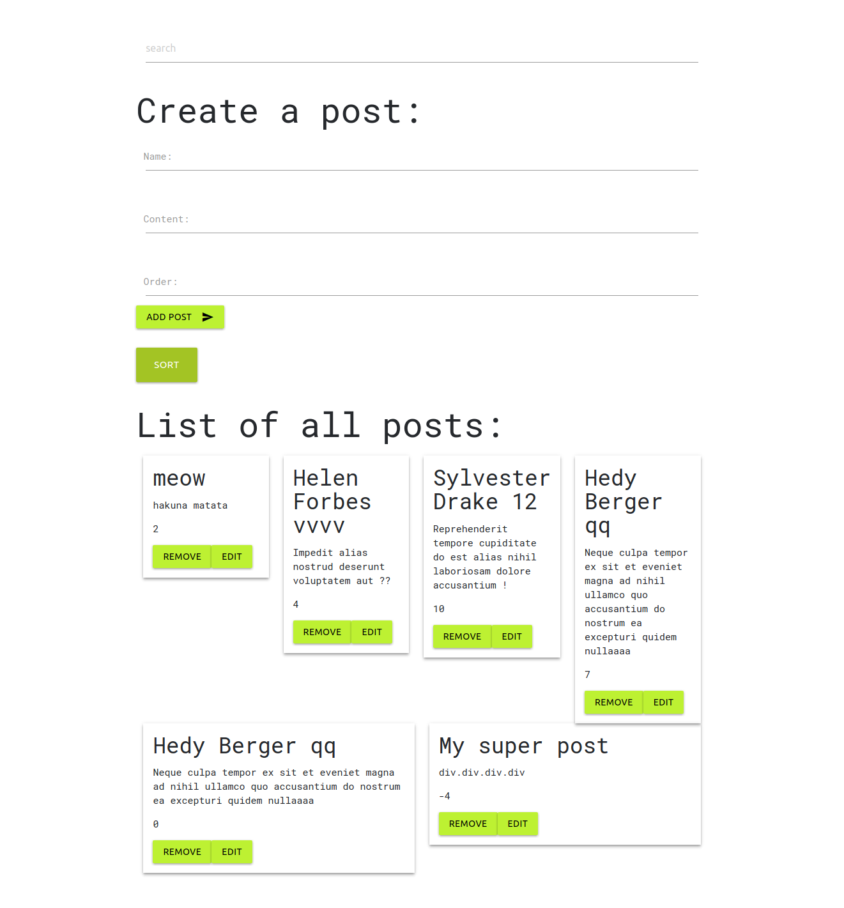

My name is Marta, i am a Junior Web Developer based in Berlin.
About Me
we rise by lifting others
My Skills
My Projects
Landing Page i created for the artist tINI.
Country-List ApiCall to list all countries with metainfo (capital, language, currency, population, borders & world population). Filter, sort & reduce the table by different parameters. Search on the fly. ascendant and descendant sorting for the world population
This is a little node server with CRUD interface. It's a full-stack project along with an API server. The project consists in a blog, where i can write my posts, update them and delete them. There is also a sorting order functionality that helps me to place my posts by ascending order.
React web app, made with Web Speech API. Adds speech synthesis (text to speech) to JavaScript.